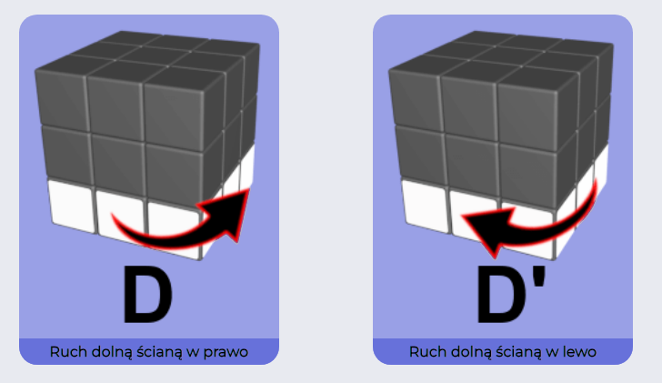

Tutaj nauczysz się układać kostkę 3x3x3 krok po kroku najprostszą metodą - LBL (Layer By Layer).
Poradnik układania kostki Rubika jest podzielony na kilka etapów,
w których otrzymasz pomocne informacje i algorytmy.
Zobacz, jak oznacza się poszczególne ruchy ścianami.
W przypadku gdy przy literce znajduje się znak prim ( ' ) to chodzi o ruch odwrotny do ruchu wskazówek.
Przykład R' to ruch przeciwny. Zawsze możesz skorzystać z poniższej ściągawki.
W oparciu o notacje tworzone są uniwersalne algorytmy,
dzięki którym ułożenie kostki Rubika i innej kostki 3x3x3 jest banalnie proste.

Najlepiej, gdy spróbujesz samodzielnie ułożyć biały krzyż.
W razie potrzeby poniżej znajdziesz zdjęcie, przedstawiające jak wygląda prawidłowo
ułożony biały krzyż oraz 2 warianty jak można go ułożyć.
Tak wygląda prawidłowo ułożony biały krzyż w kostce 3x3x3.
Musisz zwrócić uwagę na to, aby krawędzie łączyły się z centrami na środkowej warstwie,
a kolory krawędzi na całym krzyżu łączyły się tak jak na zdjęciu.
W takiej sytuacji wykonujemy poniższy algorytm,
który obraca krawędź, nie niszcząc białego krzyża.
W przypadku takiej sytuacji wykonaj poniższy algorytm,
aby wstawić krawędź i stworzyć biały krzyż.
Krok 2, czyli czas wstawienie każdego narożnika białej warstwy. Jeśli masz problem z narożnikami skorzystaj z poniższego algorytmu.
Tak wygląda poprawnie ułożona pierwsza warstwa kostki.
Biały krzyż i narożniki znajdują się na swoim miejscu.
Umieść narożnik na górnej warstwie w miejscu zaznaczonym na obrazku.
Wykonując poniższy algorytm wstawisz narożnik na dolną warstwę.
Algorytm wykonujesz do momentu, gdy narożnik będzie dobrze obrócony.
Nie zatrzymujemy się - Przechodzimy do etapu 3,
w którym zajmiemy się ułożeniem krawędzi środkowej warstwy.
Jest to nieco trudniejszy etap,
gdyż musimy uważać na ułożoną już pierwszą warstwę. Użyjemy dwa proste algorytmy.
Poniżej znajdziesz algorytm, który pozwoli Ci wkładać krawędzie zarówno w lewo, jak i w prawo.
Po tym kroku, nasza kostka będzie wyglądać tak jak na obrazku.
Wstawianie krawędzi w lewo
Wstawianie krawędzi w prawo
Jesteśmy, coraz bliżej ułożenia kostki :)
Rozpoczynamy układanie ostatniej warstwy.
Naszym pierwszym celem jest ułożenie żółtego krzyża.
Możemy spotkać 4 różne warianty.
Kropke, odwrócone L, minus lub gotowy krzyż.
Etapy układania żółtego krzyża
W każdym etapie sprawdź, czy poprawnie trzymasz kostkę.
Żółty krzyż jest już ułożony,
jednak kolory krawędzi nie pasują do centrów na środkowej warstwie
(krawędzie zaznaczone X-ami na poniższej grafice).
Ten etap polega permutacji tych krawędzi.
Wariant 1:
Poprawne krawędzie znajdują się naprzeciwko siebie. Tak jak na obrazku.
Po ułożeniu tego wariantu, otrzymasz wariant 2.
Wariant 2:
Teraz dwie poprawne krawędzie są obok siebie.
Ustawiamy kostkę tak, aby poprawna krawędź
znajdowała się z prawej strony oraz z tyłu. Tak jak na obrazku.
Po wykonaniu poniższego algorytmu,
wszystkie krawędzie żółtego krzyża będą zgadzać się z centrami środkowej warstwy.
Już prawie koniec :) Pozostało ułożyć same narożniki. Najpierw należy umieścić je na swoim miejscu, a następnie obrócić.
Ilość narożników na swoim miejscu może być równa tylko 4, 1 lub 0.
W przypadku gdy wszystkie 4 narożniki są w złych miejscach, mieszamy dowolne narożniki używając algorytmu poniżej.
W przypadku gdy 1 narożniki jest na swoim miejscu, obracamy 3 pozostałe tym samym algorytmem, aż wszystkie będą ok.
Znajdź narożnik, który jest na swojej pozycji i obróć kostkę, tak jak na obrazku.
Wykonuj algorytm do momentu, aż wszystkie 4 narożniki będą na swoim miejscu.
Obracamy kostkę. To już ostatni etap. Wszystkie narożniki znajdują się na swojej pozycji.
Teraz wystarczy je tylko obrócić.
Do obrócenia możemy mieć 4, 3 lub 2 narożniki.
Algorytm wykonujemy do momentu, aż obracany narożnik będzie skierowany żółtym do dołu.
UWAGA! Za każdym raze wykonujemy wszystkie 4 ruchy algorytmu, na przykład:
po ułożeniu jednego żółtego narożnika nadal wykonujemy ruch górna ścianą w lewo (U')
UWAGA! Kolejno obracając JEDYNIE dolną warstwą podstaw kolejny narożnik wymagający obrócenia w zaznaczone miejsce.
NIE OBRACAMY KOSTKI W DŁONIACH! Poruszamy tylko dolną warstwą.
Wykonuj dalej algorytm, aż narożnik będzie dobrze obrócony.
To samo wykonaj dla pozostałych narożników.
Poniższy algorytm obraca zaznaczony na obrazku narożnik. Uwaga!
Algorytm przez chwile niszczy ułożoną kostkę (6 krotne wykonanie algorytmu przywraca sytuację początkową).
Wykonuj algorytm do momentu, aż wszystkie 4 narożniki będą na swoim miejscu.
Udało Ci się ułożyć kostkę rubika! Możesz być z siebie dumny! :D